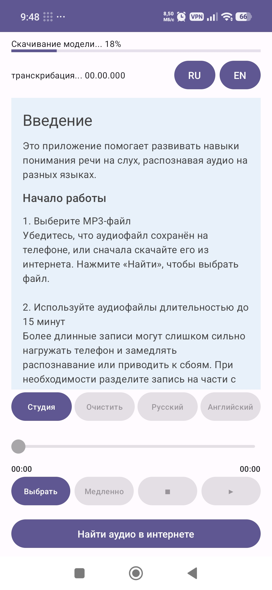

First Launch and Model Loading

When PoliWhiz starts, the main screen appears immediately. At the same time, the app automatically loads the speech recognition model into the phone's memory.
At the top of the screen, you will see the message "Loading model into memory..." and a progress indicator showing the loading percentage. Loading time depends on your device's specifications and usually takes a few seconds.
Once loading is complete, the app is ready to process audio. The main interface elements are also available while the model is loading, so you can navigate to other sections of the app without waiting for the process to finish.